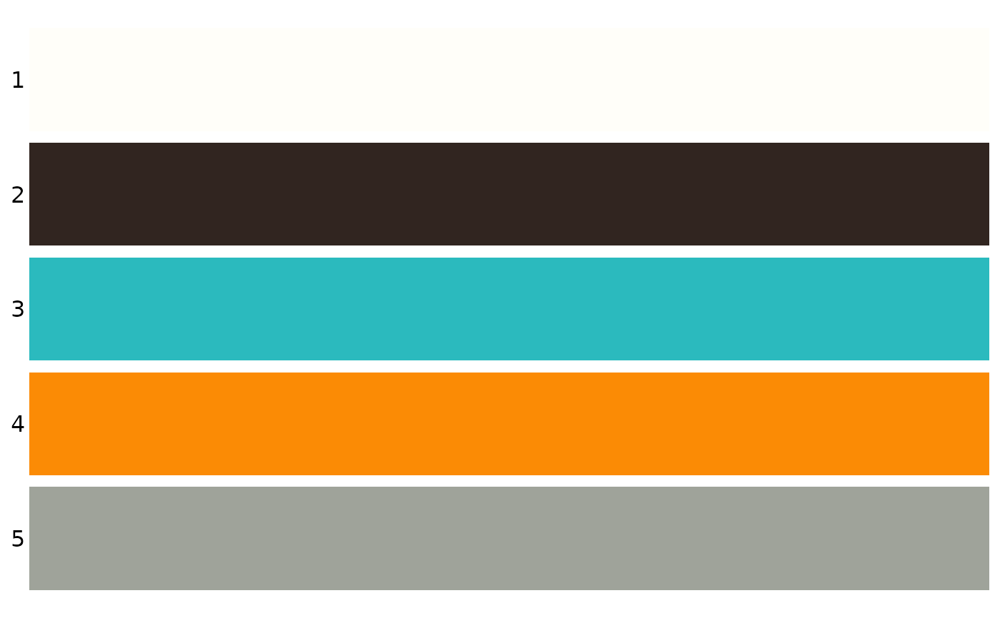

Randomly select a specified number of colors from ChineseColors or other palettes.
Arguments
- n
The number of colors to return. Default is
10.- palette
The name of the palette to use. If
NULL(default), colors will be selected from ChineseColors. Otherwise, colors will be selected from the specified palette. Available palette names can be queried with show_palettes.
Examples
simple_colors()
#> [1] "#EB3C70" "#5CB3CC" "#F0C2A2" "#2F2F35" "#602641" "#C8ADC4" "#EDF1BB"
#> [8] "#223E36" "#E9DDB6" "#5AA4AE"
show_palettes(simple_colors(n = 5))

#> [1] "1" "2" "3" "4" "5"
# Get colors from a specific palette
simple_colors(n = 10, palette = "Paired")
#> [1] "#A6CEE3" "#CAB2D6" "#1F78B4" "#FDBF6F" "#E31A1C" "#B15928" "#33A02C"
#> [8] "#B2DF8A" "#FF7F00" "#FFFF99"
simple_colors(n = 10, palette = "Chinese_blue")
#> Error in simple_colors(n = 10, palette = "Chinese_blue"): The palette "Chinese_blue" is invalid. Check the available palette names
#> with `show_palettes()`.
simple_colors(n = 10, palette = "Spectral")
#> [1] "#D53E4F" "#66C2A5" "#3288BD" "#FEE08B" "#F46D43" "#9E0142" "#ABDDA4"
#> [8] "#FDAE61" "#5E4FA2" "#FFFFBF"